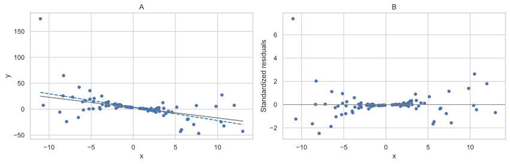
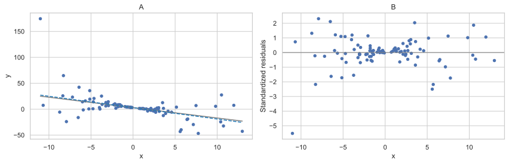

import numpy as npimport pandas as pdimport seaborn as snsimport matplotlib.pyplot as pltimport statsmodels.api as smimport statsmodels.formula.api as smffrom statsmodels.sandbox.stats.runs import runstest_1sampsns.set_theme(style ="whitegrid")np.set_printoptions(precision =3)np.random.seed(111)
We can often hypothesize that the standard deviation of residuals in the model \[
y_i=\beta_0+\beta_1x_i+\varepsilon_i
\tag{A.1}\] is proportional to the predictor \(X\), so \[
\mathrm{var}(\varepsilon_i)=k^2x^2_i, \;\; k>0.
\]
In the weighted least squares (WLS) method, we can stabilize the variance by dividing both sides of Equation A.1 by \(x_i\): \[
\frac{y_i}{x_i}=\frac{\beta_0}{x_i}+\beta_1+\frac{\varepsilon_i}{x_i},
\tag{A.2}\] then \(\mathrm{var}\left(\frac{\varepsilon_i}{x_i}\right)=k^2\), i.e., it is now stabilized.
NoteExample: WLS applied ‘manually’
Consider a simulated example of a linear model \(y=3-2x\) with noise, which is a function of \(x\).
Code
k =0.5n =100x = np.random.normal(loc =0.0, scale =5.0, size = n)y =3-2* x + np.random.normal(loc =0.0, scale = k * (x **2), size = n)df = pd.DataFrame({"x": x, "y": y})
The coefficients estimated using ordinary least squares (OLS):
fit_ols = smf.ols("y ~ x", data = df).fit()print(fit_ols.summary())
OLS Regression Results
==============================================================================
Dep. Variable: y R-squared: 0.289
Model: OLS Adj. R-squared: 0.281
Method: Least Squares F-statistic: 39.77
Date: Sat, 25 Oct 2025 Prob (F-statistic): 8.24e-09
Time: 11:38:48 Log-Likelihood: -439.81
No. Observations: 100 AIC: 883.6
Df Residuals: 98 BIC: 888.8
Df Model: 1
Covariance Type: nonrobust
==============================================================================
coef std err t P>|t| [0.025 0.975]
------------------------------------------------------------------------------
Intercept 3.9004 1.987 1.963 0.053 -0.043 7.844
x -2.5797 0.409 -6.307 0.000 -3.391 -1.768
==============================================================================
Omnibus: 117.007 Durbin-Watson: 2.041
Prob(Omnibus): 0.000 Jarque-Bera (JB): 3022.397
Skew: 3.731 Prob(JB): 0.00
Kurtosis: 28.879 Cond. No. 4.86
==============================================================================
Notes:
[1] Standard Errors assume that the covariance matrix of the errors is correctly specified.
Based on Figure A.1, the OLS assumption of homoskedasticity is violated, because the observations deviate farther from the regression line at its ends (i.e., the variability of regression residuals is higher at the low and high values of the predictor).
Code
fig, axes = plt.subplots(1, 2, figsize = (12, 4))# A: data with underlying and OLS linesaxes[0].scatter(df["x"], df["y"], s =20)# Underlying model linex_line = np.linspace(df["x"].min(), df["x"].max(), 200)axes[0].plot(x_line, 3+ (-2) * x_line, color ="gray", linewidth =1.5)# OLS fitted linebeta0, beta1 = fit_ols.params["Intercept"], fit_ols.params["x"]axes[0].plot(x_line, beta0 + beta1 * x_line, linestyle ="--", color ="tab:blue")axes[0].set_xlabel("x")axes[0].set_ylabel("y")axes[0].set_title("A")# B: standardized residuals vs xinfl = fit_ols.get_influence()std_resid_ols = infl.resid_studentized_internalaxes[1].axhline(0, color ="gray", linewidth =1)axes[1].scatter(df["x"], std_resid_ols, s =20)axes[1].set_xlabel("x")axes[1].set_ylabel("Standardized residuals")axes[1].set_title("B")plt.tight_layout()plt.show()

Figure A.1: Simulated data example with heteroskedasticity. The gray line represents the underlying model; the dashed line is obtained from the OLS fit.
To stabilize the variance ‘manually,’ transform the variables according to Equation A.2 and refit the model:
Check Equation A.2 to see the correspondence of the coefficients, see the results in Figure A.2.
Code
fig, axes = plt.subplots(1, 2, figsize = (12, 4))# A: data with underlying and WLS (manual transform) lineaxes[0].scatter(df["x"], df["y"], s =20)axes[0].plot(x_line, 3+ (-2) * x_line, color ="gray", linewidth =1.5)# Mapping: Yt = a + b*Xt where a ≈ beta1, b ≈ beta0 in original y = beta0 + beta1 xa_hat = fit_wls.params["Intercept"] # intercept ~ beta1b_hat = fit_wls.params["Xt"] # slope on Xt ~ beta0axes[0].plot(x_line, b_hat + a_hat * x_line, linestyle ="--", color ="tab:blue")axes[0].set_xlabel("x")axes[0].set_ylabel("y")axes[0].set_title("A")# B: standardized residuals vs x (from transformed model)infl_w = fit_wls.get_influence()std_resid_w = infl_w.resid_studentized_internalaxes[1].axhline(0, color ="gray", linewidth =1)axes[1].scatter(df_t["x"], std_resid_w, s =20)axes[1].set_xlabel("x")axes[1].set_ylabel("Standardized residuals")axes[1].set_title("B")plt.tight_layout()plt.show()

Figure A.2: Simulated data example with heteroskedasticity. The gray line represents the underlying model; the dashed line is obtained from the WLS fit.
Instead of minimizing the residual sum of squares (using the original or transformed data in Equation A.1 and Equation A.2), \[
RSS(\beta) = \sum_{i=1}^n(y_i - x_i\beta)^2,
\] we minimize the weighted sum of squares, where \(w_i\) are the weights: \[
WSS(\beta; w) = \sum_{i=1}^nw_i(y_i - x_i\beta)^2.
\] This includes OLS as the special case when all the weights \(w_i = 1\) (\(i=1,\dots,n\)). In the example above, \(w_i=1/x^2_i\).
In matrix form, \[
\hat{\boldsymbol{\beta}}=(\boldsymbol{X}^{\top}\boldsymbol{W}\boldsymbol{X})^{-1}\boldsymbol{X}^{\top}\boldsymbol{W}\boldsymbol{Y}.
\tag{A.3}\]
To apply Equation A.3, specify the argument weights, and remember to take an inverse. Note that the coefficients are now labeled as expected.
WLS Regression Results
==============================================================================
Dep. Variable: y R-squared: 0.437
Model: WLS Adj. R-squared: 0.431
Method: Least Squares F-statistic: 76.09
Date: Sat, 25 Oct 2025 Prob (F-statistic): 7.11e-14
Time: 11:38:48 Log-Likelihood: -326.67
No. Observations: 100 AIC: 657.3
Df Residuals: 98 BIC: 662.6
Df Model: 1
Covariance Type: nonrobust
==============================================================================
coef std err t P>|t| [0.025 0.975]
------------------------------------------------------------------------------
Intercept 2.9728 0.183 16.246 0.000 2.610 3.336
x -2.1960 0.252 -8.723 0.000 -2.696 -1.696
==============================================================================
Omnibus: 50.091 Durbin-Watson: 1.914
Prob(Omnibus): 0.000 Jarque-Bera (JB): 332.276
Skew: 1.393 Prob(JB): 7.03e-73
Kurtosis: 11.484 Cond. No. 1.51
==============================================================================
Notes:
[1] Standard Errors assume that the covariance matrix of the errors is correctly specified.
Chatterjee and Hadi (2006) in Chapter 7 consider two more cases for applying WLS, both related to grouping. We skip those cases for now and revisit our data example from Chapter 1.
NoteExample: Dishwasher shipments WLS model
First, use OLS to estimate the simple linear regression exploring dishwasher shipments (DISH) and private residential investments (RES) for several years.
D = pd.read_csv("data/dish.txt", sep ="\t")if"YEAR"in D.columns: D = D.rename(columns = {"YEAR": "Year"})modDish_ols = smf.ols("DISH ~ RES", data = D).fit()
The plot in Figure A.3 indicates that the variance might be decreasing with higher investments.
Code
fig, ax = plt.subplots(figsize = (6, 4))std_resid_dish_ols = modDish_ols.get_influence().resid_studentized_internalax.axhline(0, color ="gray", linewidth =1)ax.scatter(D["RES"], std_resid_dish_ols, s =20)ax.set_xlabel("Residential investments")ax.set_ylabel("Standardized residuals")plt.tight_layout()plt.show()